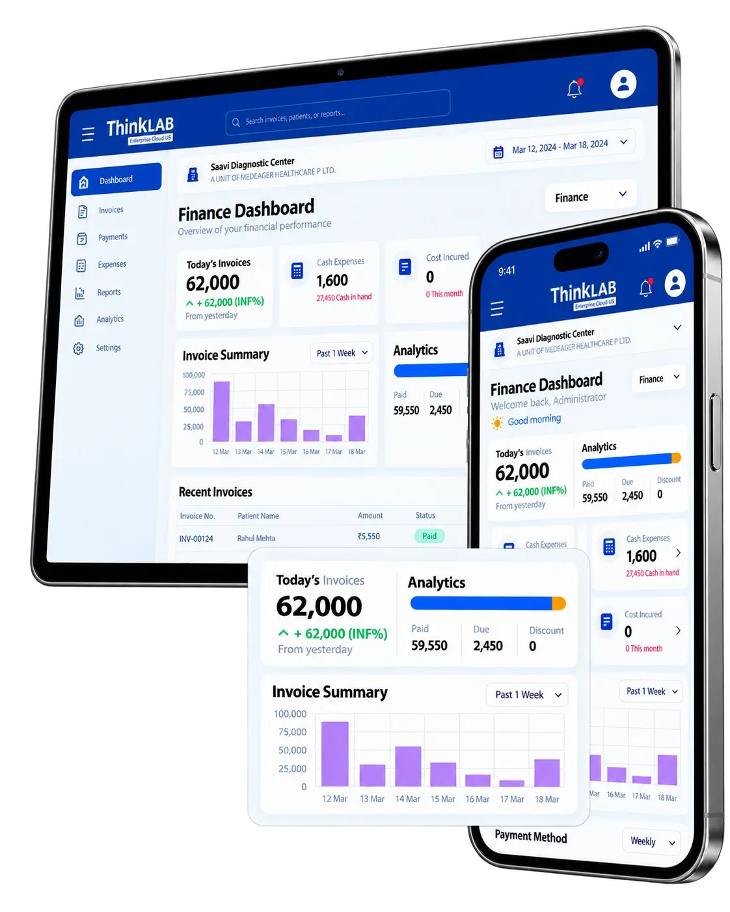
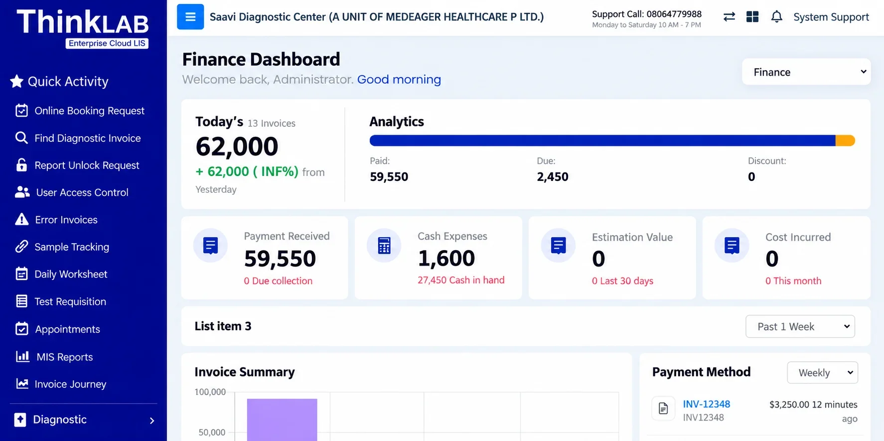
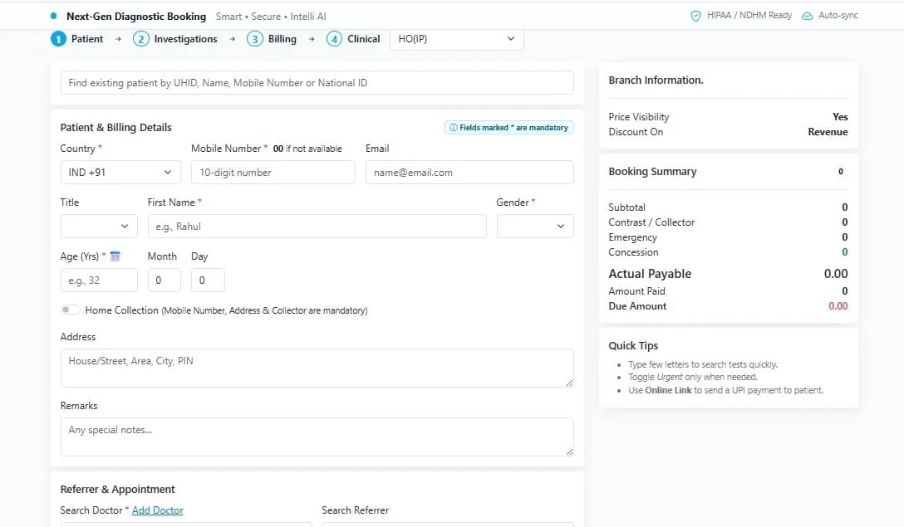
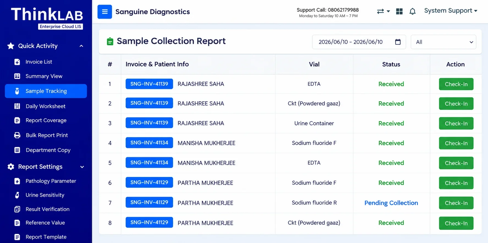
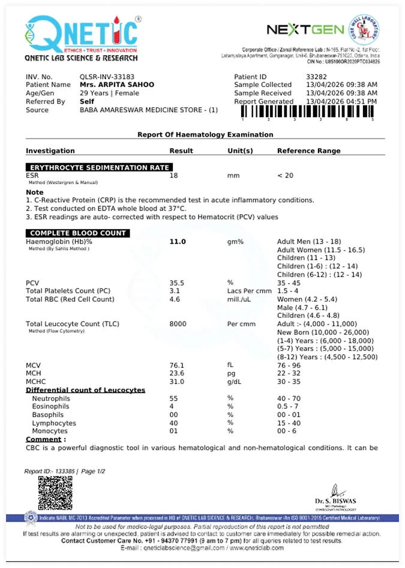
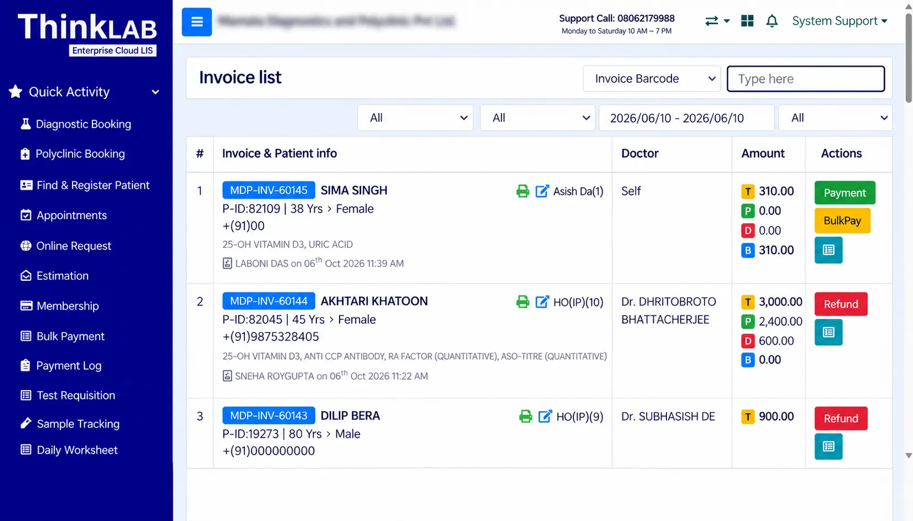
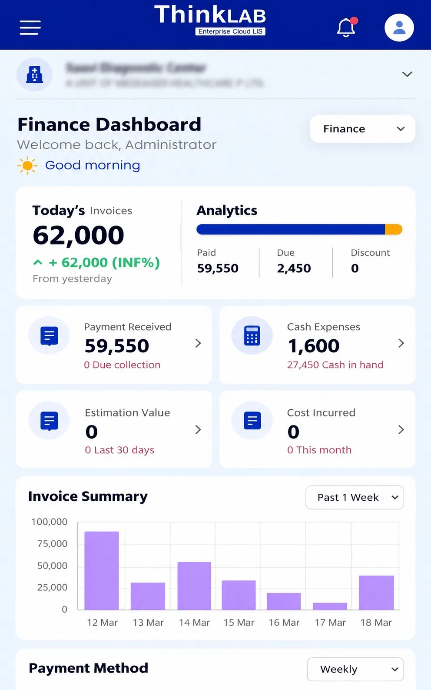

Run your entire diagnostic lab from one connected platform
ThinkLab is ThinkWide's cloud-based laboratory management software. Manage patient registration, billing, sample collection, testing, result entry, reporting and day-to-day operations in one system, across every branch and collection centre.

Labs and diagnostic centres that run on ThinkWide
What slows diagnostic labs down
Repetitive manual work
Results are copied from analyzer printouts, invoices are reconciled by hand and the same patient details are typed again and again.
No clear view of samples
When samples, worksheets and reports live on paper, nobody can quickly answer "where is this sample?" or "is the report ready?".
Branches that don't talk
Each branch or collection centre keeps its own records, so owners wait for end-of-day calls and spreadsheets to see the business.
Patients chasing reports
Patients visit or phone the lab just to collect a report, and printed reports are hard to verify.
One streamlined process, from registration to report
ThinkLab connects the people, processes and technology behind your laboratory. Registration, samples, testing and reporting move through one connected workflow, and every branch works on the same live system.
Four-step booking. Patient, Investigations, Billing and Clinical on one screen.
Results from compatible analyzers. Received in ThinkLab, then verified and approved by your team.
Reports on WhatsApp. Automated patient updates through the Meta WhatsApp Business API.

Book a patient, add tests and take payment on one screen
ThinkLab's booking screen walks the front desk through four steps: Patient, Investigations, Billing and Clinical. Returning patients are found in seconds and the booking summary updates as you go.
- Find existing patients by UHID, name, mobile number or national ID
- Book home collections with the patient's address and assigned collector
- Record the referring doctor, referrer and appointment
- Apply concessions and see collector and emergency charges, amount paid and dues
- Send an online link so the patient can pay by UPI

Know the status of every sample
The sample collection report lists each invoice with its patient, container and status, so the team can see what has been received and what is still pending collection.
- Sample status by invoice and container type
- Received and pending-collection samples at a glance
- Daily worksheets and test requisitions
- Department copies and report coverage tracking

Let compatible analyzers send results directly
ThinkLab interfaces with compatible laboratory analyzers, so test results flow straight into the lab workflow and repetitive manual data entry is reduced.
- Results from interfaced analyzers arrive in ThinkLab automatically
- Less retyping and fewer transcription errors
- Compatibility confirmed for your analyzer make and model before go-live
Configure every report the way your lab works
Report settings let you define pathology parameters, reference values and report templates for each department. Before a report is released, abnormal and critical values are flagged for review and results go through verification by your team.
- Pathology parameters, reference values and report templates
- Urine sensitivity reporting
- Result verification before release
- Abnormal and critical values flagged for attention
- Report unlock requests to control changes after approval
Branded, QR-coded reports, delivered digitally
Reports carry your lab's format and branding with a QR code for verification. Send them online and through the Meta WhatsApp Business API, print in bulk when needed, and let patients find their reports online.
- QR-coded lab reports
- Automated patient updates through the Meta WhatsApp Business API
- Bulk report printing
- Online report search for patients using their registered details
- Smart Report for a clearer, patient-friendly view

See collections, payments and dues the moment you log in
The finance dashboard shows today's collection, payments received, cash expenses, estimation value and cost incurred, with an invoice summary and payment methods. It works on the desktop and on your phone.
- Finance dashboard on desktop and mobile
- Invoice list, summary view and invoice journey
- Error invoices and invoice search
- MIS reports for management
- User access control for every role


Every branch and collection centre on one system
ThinkLab supports multi-location operations, so laboratories manage branches, collection centres, users and workflows through one centralised platform. Branch settings control details such as price visibility and how discounts are applied.
- Branches and collection centres managed centrally
- Branch-level settings for price visibility and discounts
- Online booking requests and appointments
- Suitable for single labs and growing multi-branch networks
How ThinkLab works,
step by step
Register & bill
Patient, tests and payment captured at the front desk or by a home collector.
Collect sample
Samples collected, labelled and handed over to the lab.
Receive results
Compatible analyzers send results directly into ThinkLab.
Verify
Abnormal and critical values are flagged for review.
Approve
Your pathologist verifies and approves the report.
Deliver
QR-coded report sent online and on WhatsApp.
For patients, doctors
and collectors
Apps and modules that work with ThinkLab, so everyone involved in a test uses the same record.
Patient app
Book tests or packages, manage family members, access lab reports and track health records.
Doctor app
Access patient reports and report history, create digital prescriptions and manage follow-ups.
Collector app
Manage assigned home collections, track status, handle samples and barcodes, and complete sample handover.
ThinkLab integration capabilities
Lab analyzers
Interfacing with compatible analyzers
Meta WhatsApp Business API
Automated patient updates and reports
Payment gateway
Online payment links, including UPI
Structured data exports
Financial, doctor, patient, collector and B2B data
Patient, Doctor & Collector apps
Connected to the same lab record
Custom integrations
API and custom work, scoped and quoted separately
Built for
What ThinkLab customers say
What is ThinkLab, and how can it help manage my diagnostic laboratory?
ThinkLab is a cloud-based laboratory management platform designed to manage patient registration, billing, sample collection, testing, result entry, report generation and other day-to-day lab operations through one connected system.
Can ThinkLab manage multiple diagnostic centres, collection centres and branches?
Yes. ThinkLab supports multi-location operations, helping laboratories manage branches, collection centres, users and workflows through a centralised platform.
Can ThinkLab connect directly with laboratory analyzers?
Yes. ThinkLab supports interfacing with compatible laboratory analyzers, allowing test results to flow directly into the laboratory workflow and reducing repetitive manual data entry.
How does ThinkLab help manage home sample collection?
ThinkLab works with the Collector App to manage assigned collections, patient details, visit status, sample collection, barcodes, payments and sample handover.
Can patients book tests and access their reports online?
Yes. Through connected patient services, patients can book tests, manage family profiles, access available reports and maintain their diagnostic records digitally.
Is there a platform for doctors?
Yes. ThinkLab's connected doctor solutions provide access to relevant patient reports and support structured digital prescriptions.
Can I customise reports, branding and workflows?
ThinkLab provides configurable options that can be adapted to different laboratory workflows, report formats, branding requirements and operational processes.
Is ThinkLab suitable for small labs as well as large networks?
Yes. ThinkLab is designed to support different laboratory setups, from individual diagnostic labs to growing organisations with multiple branches and collection centres.
See ThinkLab in action
Share a few details and the ThinkWide team will walk you through the workflows that matter to your centre.
- A walkthrough of the workflows your team uses every day
- Answers on analyzer compatibility for your machines
- A plan for onboarding, configuration and data migration
Prefer to talk? Call +91 93306 87508